A Claude Code plugin · the shutdown command
Keep the fire going. Don't burn out.
One command that ends the working day in Claude Code. /hestia:done saves whatever you have open, writes tomorrow's first move, and stops your agents until morning.
Scroll to live through one day. The fire follows.
Uncommitted changes in every repo you worked in today go into a refs/hestia/<timestamp> snapshot. Your branch, working tree and index stay exactly as they were.
Unattended Claude Code runs get SIGTERM. Open sessions are paused by a hook until the next working morning.
However the morning starts, with a new session, a resumed one or the window you left open, the first one you're at after the pause is handed yesterday's list and the first thing to do. Once, then Hestia goes quiet. Scripted runs never take it.
Each task finishes faster, so there's always one more that fits. With agents running, the work keeps going whether you're there or not. Starting work has endless tooling. Ending it has none.
People don't stop because stopping feels like dropping something: the fear is losing the thread. So shutting down is only possible if picking back up is guaranteed. That is the whole mechanism.
Who it's for: people who build with Claude Code every day, run several sessions or repos at once, and find it hard to stop.
The brief: built for the Claude Code Impact Lab, Dublin: a shutdown command. Its one rule is that it has to give time back, not help you do more.
Scroll through one day. The fire behind the page follows each stage. Every terminal block below is real output from the engine, copied from the project README. Nothing is drawn or retyped.
/hestia:today tells you whether you're paused and how today's load looks. It never shows up on its own.
Working. 14 prompts across 1 project, 0.8 hours from first to last no break longer than 20 minutes today
Captured on a real machine with real session history.
/hestia:break 45m saves where you are and pauses agents for that long. It writes no list, because the day isn't over. Nothing is killed: a headless run is paused at its next step, so its work is still there when you're back.
On a break until 19:27. saved 2 files in demo -> refs/hestia/2026-10-29-184216 1 Claude session paused, they'll stop at their next step
If an agent tries to edit a file during the break, the PreToolUse hook answers:
{"hookSpecificOutput": {"hookEventName": "PreToolUse", "permissionDecision": "deny", "permissionDecisionReason": "On a break until 19:27. Run /hestia:back to end it early."}}Coming back early with /hestia:back hands back exactly where you were:
Back on. On a break since 18:42. Before the break: git -C /path/to/demo checkout refs/hestia/2026-10-29-184216 -- .
From one run against a throwaway repo with HESTIA_HOME in a temp folder. The third line of the break output is a real Claude Code window that was open on the machine. Temp paths are shortened to /path/to/demo.
/hestia:done answers in three lines and stops. A command that ends the day shouldn't give you more to read.
Clocked out until Thu 29 Oct 19:17. saved 2 files in demo -> refs/hestia/2026-10-29-191558 tomorrow's list: ~/.hestia/TOMORROW.md
What it leaves for the morning: your note, the first thing to do, and the exact line to get your work back.
# Tomorrow - Thu 29 Oct > unblocking the CSV import for the ops team ## Start here - finish test_import.py for quoted semicolons, then fix parse_row ## Where you left off - **demo** (main) - 2 files saved `git -C /path/to/demo checkout refs/hestia/2026-10-29-191558 -- .` last commit: Accept semicolon-separated exports in the CSV import ## Today - no prompts recorded today ## Overnight - nothing was running
The snapshot is built through a temporary git index, so nothing is stashed, nothing is committed to your branch, and the test suite checks that .git/index is byte-identical before and after.
From a run against a throwaway repo with HESTIA_HOME in a temp folder and --keep-agents, so nothing was signalled. To keep the run short, the night was a two-minute pause. Temp paths are shortened. The throwaway setup has no session history, so Today is empty.
Unattended runs got SIGTERM at shutdown, graceful and never SIGKILL. A session you left open isn't killed. The hook stops it at its next step instead:
{"hookSpecificOutput": {"hookEventName": "PreToolUse", "permissionDecision": "deny", "permissionDecisionReason": "Clocked out until Thu 29 Oct 19:17. Run /hestia:back if tonight can't wait."}}You can never lock yourself out: /hestia:back is explicitly allowed through the pause, and it hands you the thread straight away.
Back on. Paused since Thu 29 Oct 19:17. Start here: finish test_import.py for quoted semicolons, then fix parse_row Overnight: nothing ran between Thu 29 Oct 19:17 and Thu 29 Oct 19:18. Yesterday's list: ~/.hestia/TOMORROW.md
The hook answer is from the same run as Bank. The back output is from a second run: /hestia:done, then /hestia:back a minute later.
Once the pause runs out, the first prompt you type gets yesterday's list as quiet context, whether you open a new session or come back to the window you left open. Scripted runs never take it, and it is handed over exactly once.
This is what the next prompt in the window left open overnight received:
Where the last working day was left off, from Hestia, written at shutdown. Keep it in mind to pick up the thread, and do not act on it unless asked. If the user greets you or asks where they were, answer with the 'Start here' item in one sentence. Do not recite the list. Overnight: nothing ran between Thu 29 Oct 19:15 and Thu 29 Oct 19:17. # Tomorrow - Thu 29 Oct > unblocking the CSV import for the ops team ## Start here - finish test_import.py for quoted semicolons, then fix parse_row
A new session opened after that got nothing:
Handed over at Thu 29 Oct 19:17.
Same run as Bank. The context block is cut after Start here; the rest is the same TOMORROW.md shown under Bank.
Once. Four skippable questions, saved to a marked section of ~/.claude/CLAUDE.md.
Saves open work, writes tomorrow's list, pauses Claude until the next working morning.
Saves where you are and pauses agents for that long, then lifts itself.
Lifts a pause or break early, and tells you where to start and what ran while you were away.
Whether you're paused, and today's load. Only ever when you ask.
The same reading as one static page. Opens when you ask, never refreshes.
One plain paragraph on who today's work helps, built from your real commits.
Shows one thing that changed in Claude Code since your last check, in five lines.
In Claude Code:
/plugin marketplace add Lukallo/hestia /plugin install hestia@hestia /hestia:init
Needs git and Python 3. No other dependencies: the engine is standard library only.
At the end of the day:
/hestia:doneCheck every claim yourself. One command builds a throwaway repo and runs the whole flow:
python3 plugins/hestia/scripts/hestia.py selftest
51/51 checks passedHonest limits: agent stopping only reaches Claude Code processes on this machine, found via ps. On Windows the pause works but nothing is signalled. We can't claim burnout goes down. We can claim the day has an end, the agents stopped, and nothing ran between shutdown and morning. All limitations.